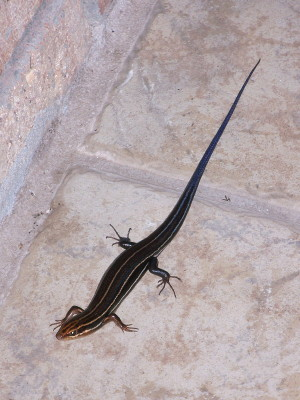
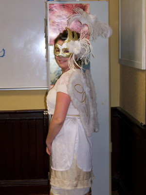
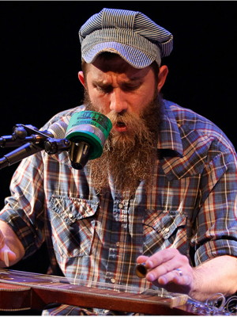

2011 Holiday Web Page

| Erich and Margie's 2011 Holiday Web Page | |
December A yellow rat snake visited our house outside Erich's office. For Christmas, Margie got 10 pounds of books, and Erich got 10 pounds of candy. It was 68 degrees when we made our annual trip to the beach on Christmas day. We had 5 guests at our annual New Year's Eve Party, which had a pajama party theme this year.
January We attended two brunches to celebrate the new year. After Auburn won the NCAA football title, Erich helped toilet paper Michelle and Guen's yard. Margie supervised the clearing of part of our forest for the eventual dog. Erich got his first e-mail from Afghanistan. We hosted a games party.
February On Groundhog Day, we watched the movie Groundhog Day. The next day, we drove down to Cocoa to spend the day with Lynn. Erich enjoyed the super bowl, and the team he rooted for won. We celebrated Chinese New Year by playing (and losing) Mah Jongg. Erich's name appeared on the cover of a magazine. A green lizard fell on Margie's front windshield in traffic, but it was brown by the time Margie stopped and shooed him away. Erich filed his taxes electronically for the first time. During the first weekend of Stetson baseball, Erich caught a launched T-shirt.
March Our yard got a fence. Stetson's women's basketball team made SportCenter's number 1 play of the day, by making a half court basket in the final seconds to win their semifinal conference game. We went canoeing, and you can see our photos here. Some of Erich's popular web pages were translated to Belorussian. On St. Patrick's Day we went to see a concert by Colin Hay, lead singer of the 80's group Men at Work. The week after that, we saw Gordon Lightfoot at the same venue. Alas, he sounded like bad karaoke, since his voice was almost gone. Stetson's baseball team was briefly ranked in the top 20 national teams. Jeff Hamrick, one of our former students who is now a professor, stayed with us for a couple days while he attended Stetson homecoming.
April One of Erich's students told him that his hair looked like a bad toupee. We found out that our lawn furniture that we had brought back to the store to be repaired under warranty was accidentally destroyed. One of Erich's students brought a snake to class. We let two sandhill cranes and their chicks cross the road in front of us. A skink moved into our garage. With the invasion of caterpillars, this year we also got caterpillar killer beetles (left). While we were watching, our TV informed us that it would shut off soon, and then it did. We participated in the second annual mini-golf tournament with some friends. Margie tied for first, and Erich tied for third. While there we saw a snake and a grapevine beetle (right). The dean asked Erich to remove his math purity test from his public web site. An Italian puzzle magazine featured a biography of Erich and his puzzles. An English translation of the text is here.
May The weekend between classes and final exams we went to the Gamble Rogers Folk Festival in St. Augustine. We saw men carrying large snakes, a couple bicycling in the ocean, the usual touristy stuff, and oh, some fabulous music including Larkin Poe, The Grascals, Sharon Resnikoff, Sam Pacetti, David Wilcox, Michael Smith, Michael Reno Harrell, Richard Thompson, and Rebecca Loebe. We returned just in time for Erich to attend Guen and Michele's Beltane Fire celebration, at which we watched belly dancers, danced around a May pole, ate a fabulous meal, and had a "blind date" with another guest. An owl visited our yard. A wooden puzzle company licensed one of Erich's puzzle designs. We saw The Carolina Chocolate Drops in concert. Erich's friend Barbara came to visit from Albuquerque. We canoed, went to the beach, shopped, visited Leu Gardens, saw a movie, went for many walks, and had some great talks. We had a hot water leak below our slab that required a jackhammer to fix. Erich ordered a burger from Checkers and got a bun with no burger.
June One day the squirrels in our yard were acting like they were drunk. Some sandhill cranes in the neighborhood had chicks. The Stetson baseball team made the NCAA tournament, but lost twice to the eventual champions, South Carolina. Erich recaulked his shower. Erich got his first e-mails from Namibia and Zambia, but only because Michael and Regina took a trip there. Some engineering students in India made an app out of some of Erich's puzzles. Margie did battle with some raccoons tearing up our new lawn, and lost. We watched the last 4 seasons of The West Wing.
July We hosted a Fourth of July games party. We did a 2-star crossword puzzle only reading the Across clues. Erich got 3 crowns and had a CT scan. Our well water tested positive for bacteria, and after some study, we installed a UV system. On our 24th anniversary, we saw a hawk and an eagle. We had our first annual OCD week. A skink surprised Margie in the kitchen. We visited a guitar exhibit at the Orlando Science Center, with some live music by Emily Kopp.
August We saw Emily Kopp open for Michelle Branch. We visited our friends Lynn and Chris near Cocoa. Erich's year-old car got its first oil change. We went to see a sitar performance with Michael and Regina. One of Erich's puzzles was used in the U.S. Puzzle Championships. Erich went back to school and Margie didn't, much to her amusement. Eleven turkeys visited our street.
September Margie donated over 400 books to the library to make room for a dog crate. Erich redid his will. Margie went on a river cruise with Missy's class and saw a salamander. Erich won a T-shirt at a poker tournament. One of Erich's students asked in class who his least favorite girlfriend was. With Fall came the usual batch of banana spiders and the new TV shows. A gigantic polyphemus moth visited our porch screen.
October Erich won 15 gift cards worth a total of $210 for $1.25 (plus $39.99 shipping) on some penny auction sites. Erich paid back the scholarships he won as a high school senior. We re-watched all 6 seasons of "Sex and the City". Many of Erich's students dressed up for halloween. You can see all the pictures here. At Petoberfest, Margie won 2 free tickets to Disney World. Does anyone want them?
November After much searching and worrying, Margie finally brought a dog home. An 18-month-old hound/lab mix, he was abandoned at an apartment complex the week before. She named him Gamble after Gamble Rogers, though the name works on several levels. He is potty-trained, and knows the command "sit", but is very much an exuberant puppy. After a few weeks of him getting used to our home, we had him neutered, and then Margie and Gamble began obedience classes. Margie learned "off", "stay", "come", "leave it", and on a good day Gamble knows some of those. We spent the full moon with Guen and Michele, sipping port and making smores. Erich and Guen went to see Sarah Harmer and Josh Ritter in concert. By jumping on the door, Gamble locked Margie out of the house, twice. Erich watched as one of his ex-students did a Rubiks cube in 35 seconds. Gamble chased a possum up a tree.
December Some of Erich's puzzles were used in an Israeli textbook for elementary school. Gamble went to doggie daycare for the first time, and dog parks for the first time. Erich gave away his cassette tape collection. We went to see Sawyer Brown in concert at Stetson. Erich rooted against his Indianapolis Colts so they would get first draft pick in the spring. We ate dinner with friends at the Cassadaga Inn. We saw Ben Prestage at DaVinci's and it was mobbed. Erich was contacted to consult on the building of a mini-golf course on Marco Island, because of his knowledge of other courses in the area. We attended Guen and Michele's annual solstice celebration, and will spend Christmas Eve with them watching the Dallas game. We plan to celebrate Christmas Day by taking Gamble to the dog beach for the first time. Wish us luck!
Erich's holiday puzzles can be found here. And you can see our archive of previous holiday web pages here.
 
 